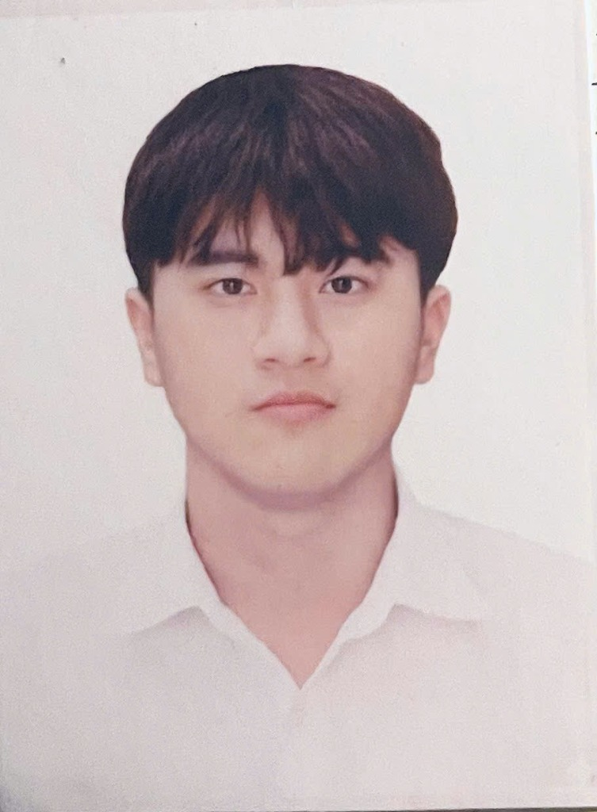

Hello, I'm
Final-year Control & Automation Engineering student at Danang University of Science and Technology — targeting SoC / RTL Design or Design Verification.

I'm a final-year Control and Automation Engineering student (expected graduation Sep 2027) at Danang University of Science and Technology, Vietnam.
My passion lies in digital hardware design — RTL design with Verilog, FPGA-based SoC development, and embedded systems with STM32 and ESP32. I am actively targeting a career in SoC/RTL Design or Design Verification (DV).
I am multilingual: Vietnamese (native), English (TOEIC 875), and Chinese (HSK 3).
B.Eng. Control and Automation Engineering
Oct 2022 – Sep 2027 (expected)Verilog · ModelSim · FPGA · RISC-V
Designing an FPGA-based SoC for multi-axis PMSM servo control, following a published design with a 3-stage pipelined 32-bit RISC-V CPU and a hardware control coprocessor (up to 6 axes). Currently in design phase: studying the reference architecture and learning RTL design in Verilog; implementation and ModelSim verification planned next. Plan to extend the thesis into a research project.
Sep 2026 – Present
STM32 · YOLOv8 · Solar Energy · IoT
Developed a portable, solar-powered traffic light adjusting signal timing in real time based on vehicle density. Programmed STM32 firmware to receive density data from YOLOv8 over Wi-Fi, then calculate red/green durations dynamically (e.g., 33 s/39 s at low density vs. 15 s/57 s at high density). Achieved 87% detection accuracy on four-wheeled vehicles across 8 test runs (day & night). Awarded Consolation Prize at Faculty-level Scientific Research.
Jan – Mar 2025
ESP32 · LoRaWAN · HMI · Python
Team member developing an ESP32-based device using LoRaWAN to convert spoken/written language into sign language for deaf users, displayed on an HMI screen. Analyzed sign language mapping and wrote ESP32 firmware for real-time character conversion. Tested the conversion pipeline in Google Colab. Awarded 3rd Prize at SCAPA Competition.
Oct 2024
Team Leader (5 members) — Smart hydraulic flood barrier cover for household appliance protection.
Smart Sign Language Translator: ESP32 and LoRaWAN device for deaf users.
Design and Development of Portable Traffic Light System using IoT and Solar Energy.
I'm always open to new opportunities, collaborations, or just a friendly chat about hardware design and embedded systems.